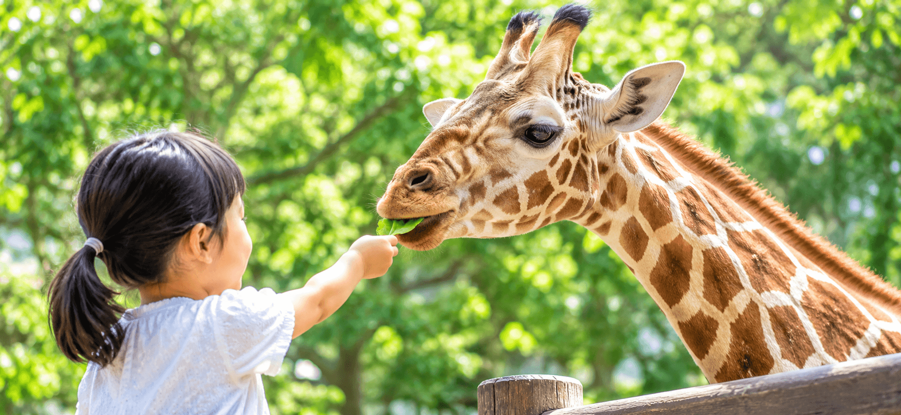
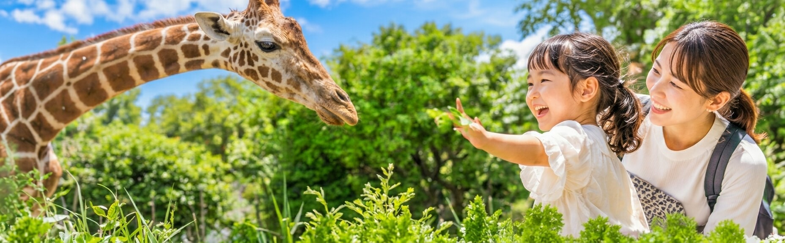
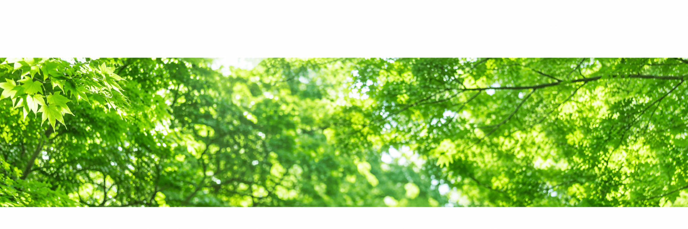

ふれあい
体験をしよう
動物園でしか味わえない体験でたくさんの感動に出会えます。

本日は団体のお客様が多くご来園の予定です。事前購入のeチケットがおすすめです。

本日の入園状況（窓口・WEB）
入園券 販売中
ふれあい整理券 配布中
🕘 本日の開園時間
9:00〜17:00
最終入園は閉園の30分前まで
📅 今月の開園カレンダー
休園日：火曜日
今イチオシ！
当園の名をかたる偽のチケット販売サイトが確認されています。購入は必ず公式の案内からお願いします。不審なサイトでの入力はお控えください。（※これはデモ用の文章です）
夏休み期間の金・土曜日は20:30まで開園します。夜ならではの動物たちの姿をお楽しみください。（※デモ用）
飼育員の合図に合わせて、ゾウたちが順番に体重計へ。みんな元気に成長しています。（※デモ用）

動物園でしか味わえない体験でたくさんの感動に出会えます。

飼育員が垣間見れる、動物たちの普段の姿をお届け。

正面ゲート横の案内所で無料貸出を行っています（数に限りがあります）。
屋内展示や屋根付きの休憩所があります。雨の日ならではの動物たちの様子もお楽しみください。
ピクニック広場など指定エリアでお召し上がりいただけます。動物にエサを与えないようご注意ください。
動物の安全のため、盲導犬・介助犬などを除きペットの同伴はご遠慮いただいています。
※天候・動物の体調により変更になる場合があります。
| おとな | 600円 |
|---|---|
| 中学生以下 | 無料 |
| 65歳以上 | 300円 |
※金額はデモ用の仮の数字です。eチケットは当日でも購入できます。
路面電車「どうぶつ園前」駅より徒歩5分。普通車約400台分の駐車場があります。（デモ用）


長い舌でエサを受け取るキリンを間近で。1回300円、整理券制です。

今年生まれた赤ちゃんゾウが、お母さんと一緒に元気に過ごしています。

やさしくなでて、ふわふわの手ざわりを体験しよう。手洗いをお忘れなく。
飼育員の解説つきで、おやつを食べる姿を観察できます。

よちよち歩く行列は一番人気。通路の脇でお待ちください。

夏休み期間の金・土曜は20:30まで。夜行性動物の活発な姿に会えます。
地元食材を使ったメニューや、動物モチーフのオリジナルグッズがそろっています。
| 森のキッチン （中央広場） |
カレー・パスタ・キッズプレートなど（10:30〜16:00） |
|---|---|
| サバンナカフェ （テラス横） |
ソフトクリーム・ドリンク・軽食（10:00〜16:30） |
| もりのおみやげ屋 （正面ゲート横） |
ぬいぐるみ・お菓子・オリジナル雑貨（9:30〜17:00） |
※営業時間・メニューは季節により変更になる場合があります。（デモ用）
すべてのお客様に安心してお過ごしいただけるよう、園内のバリアフリー化を進めています。
| 車いすの貸出 | 正面ゲート案内所にて無料貸出（予約不要・先着順） |
|---|---|
| 多目的トイレ | 園内5か所に設置（オストメイト対応・おむつ交換台あり） |
| 園内ルート | 主要エリアはスロープ対応。一部坂道には迂回ルートをご案内しています |
| 介助犬の同伴 | 盲導犬・介助犬・聴導犬と一緒にご入園いただけます |
※入園料の障がい者割引については窓口または案内所でお尋ねください。（デモ用）
小さなお子さま連れでも快適にお楽しみいただける設備をご用意しています。
| ベビーカー貸出 | 正面ゲート横案内所にて無料貸出（生後7か月〜24か月頃対象・台数限定） |
|---|---|
| 授乳室 | 中央広場「ベビーケアルーム」・正面ゲート横の2か所（調乳用お湯あり） |
| おむつ交換台 | 園内すべての多目的トイレ・女性用トイレ内に設置 |
| 離乳食の温め | 「森のキッチン」スタッフにお声がけいただければ電子レンジをご利用いただけます |
※園内のすべてのトイレにおむつ用ダストボックスを備えています。（デモ用）
動物たちの健康と安全、そして皆さまに気持ちよくお過ごしいただくためのお願いです。
※係員の指示に従っていただけない場合は、ご退園をお願いすることがあります。（デモ用）